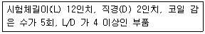
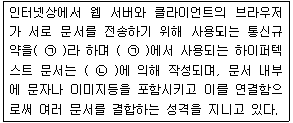

자기비파괴검사기능사 (2011-02-13 기출문제)
1과목: 자기탐상시험법
1. 초음파 탐상시험에서 속도가 일정할 때 주파수를 높이면 일반적으로 파장은 어떻게 변하는가?
- 짧아진다.
- 길어진다.
- 짧아지다가 길어진다.
- 길어지다가 짧아진다.
(정답률: 61%)

2. 비파괴검사법 중 대상 물체가 전도체인 경우에만 검사가 가능한 시험법은?
- 침투탐상시험
- 방사선투과시험
- 초음파탐상시험
- 와전류탐상시험
(정답률: 85%)
3. 기포누설검사의 특징에 대한 설명으로 옳은것은?
- 누설 위치의 판별이 빠르다.
- 경제적이나 안전성에 문제가 많다.
- 기술의 숙련이나 경험을 크게 필요로 한다.
- 프로브(탐침)나 스니퍼(탐지기)가 반드시 필요하다.
(정답률: 66%)
4. 침투탐상시험에서 형광침투액을 사용하는 것보다 염색 침투액을 사용하는 것이 유리한 경우는?
- 어두운 장소에 적용할 때
- 자연광을 이용하는 장소일 때
- 수도시설이 설치되는 장소일 때
- 약한 전원이 필요한 장소에서 작업할 때
(정답률: 75%)
5. 자분탐상시험으로 발견될 수 있는 대상으로 가장 적합한 것은?
- 비자성체의 다공성 결함
- 철편에 있는 탄소 함유량
- 강자성체에 있는 피로균열
- 배관 용접부내의 슬래그 개재물
(정답률: 81%)
6. 시험체의 내부와 외부, 즉 계와 주위의 압력차가 생길 때 주위의 압력은 대기압으로 두고, 계에 압력을 가압하거나 감압하여 결함을 탐상하는 비파괴검사법은?
- 누설시험
- 침투탐상시험
- 초음파탐상시험
- 와전류탐상시험
(정답률: 84%)
7. 크롬-몰리브덴 합금강 재료를 절삭하고 표면을 매끈하게 연삭하였을 때 이 공정에서 발생한 표면결함 검출에 적합한 비파괴검사법의 조합만으로 옳은것은?
- 초음파탐상검사와 누설검사
- 자분탐상검사와 침투탐상검사
- 침투탐상검사와 방사선투과검사
- 방사선투과검사와 초음파탐상검사
(정답률: 72%)
8. 다른 비파괴검사법과 비교했을 때 방사선투과시험만의 특징에 대한 설명으로 틀린 것은?
- 균열만을 검출할 수 있다.
- 반영구적인 기록이 가능하다.
- 내부결함의 검출이 가능하다.
- 방사선 안전관리가 요구된다.
(정답률: 75%)
9. 각종 비파괴검사를 실시함으로서 평가할 수 있는 항목과 거리가 먼 것은?
- 시험체 내의 결함 검출
- 시험체의 내부구조 평가
- 시험체의 물리적 특성 평가
- 시험체 내부의 결함 발생 시기
(정답률: 78%)
10. 비파괴검사법 중 일반적으로 결함의 깊이를 가장 정확히 측정할 수 있는 시험법은?
- 자분탐상시험
- 침투탐상시험
- 방사선투과시험
- 초음파탐상시험
(정답률: 70%)
11. 방사선투과검사에서 산란 방사선을 제거하기 위한 것과 관계가 먼 것은?
- 납판
- 마스크
- 납글자
- 콜리미터
(정답률: 40%)
12. 침투탐상시험시 건식, 습식 및 속건식 등의 분류에 사용되는 용어는?
- 세정제(cleaner)에 의한 분류
- 침투액(penetrant)에 의한 분류
- 현상제(developer)에 의한 분류
- 유화제(emulsifier)에 의한 분류
(정답률: 67%)
13. 자분탐상시험의 특징에 대한 설명으로 틀린 것은?
- 핀홀과 같은 점 모양의 결함은 검출이 어렵다
- 자속방향이 불연속 위치와 수직하면 결함 검출이 어렵다.
- 시험체 두께방향의 결함 깊이에 관한 정보는 얻기가 어렵다.
- 표면으로부터 깊은 곳에 있는 결함의 모양과 종류를 알기는 어렵다.
(정답률: 48%)
14. 와전류탐상시험의 탐상코일 중 외삽 코일(OutDiameter Coil)과 같은 의미에 속하는 것은?
- 내삽 코일(inner coil)
- 표면 코일(surface coil)
- 프로브 코일(probe coil)
- 관통 코일(encircling coil)
(정답률: 58%)
15. 코일법을 사용하여 다음과 같은 조건의 시험체를 자화 시킬 때 적당한 자화전류는?

- 875A
- 1125A
- 1166A
- 1500A
(정답률: 29%)
16. 자분탐상시험시 표피효과 등으로 인하여 표면부근은 자화되지 않아 표면결함만을 연속법으로 탐상하기 위한 자화전류로 적합한 것은?
- 교류
- 직류
- 맥류
- 충격전류
(정답률: 61%)
17. 자분모양을 해석할 때 누설자속이 있는 부위의 탐상면에 자분이 축적되어 나타난 것을 무엇이라 하는가?
- 결함
- 지시
- 연속
- 건전부
(정답률: 38%)
18. 복원중(정확한 문제, 보기내용을 아시는분께서는 오류 신고를 통하여 문제, 보기 내용 작성 부탁드립니다. 문제 오류로 정답은 4번입니다.)
- 복원중
- 복원중
- 복원중
- 복원중
(정답률: 64%)
19. 표면 연마 후 약품으로 부식시켜 금속현미경에 의한 미시적, 거시적 시험으로 조사하거나 자분 탐상시험이 아닌 침투탐상시험 등 다른 시험방법으로 확인되는 의 사지시모양은 무엇인가?
- 자극지시
- 단면급변지시
- 표면거칠기지시
- 투자율이 다른 재질경계지시
(정답률: 36%)
20. 프로드(prod)를 사용하여 자분탐상검사할 때 일반적으로 가장 적절한 프로드(prod) 사이의 거리는?
- 2~5인치
- 6~8인치
- 8~12인치
- 15인치 이상
(정답률: 73%)
2과목: 자기탐상관련규격
21. 막대자석을 가열하지 않고 구부려서 말굽자석으로 만들어 양끝을 서로 마주보게 놓으면 극성은?
- 극성을 모두 잃는다.
- 자석의 자력이 떨어진다.
- N극과 S극이 계속 존재한다.
- 새로운 제3극이 만들어진다.
(정답률: 61%)
22. 자분탐상시험용 표준시험편이 아닌 것은?
- A형
- B형
- C1형
- C2형
(정답률: 64%)
23. 자분시험에 사용할 비형광 습식자분의 농도(ɡ/ℓ)로 옳은 것은?
- 0.3
- 1
- 7
- 30
(정답률: 41%)
24. 탄소 함유량이 높은 공구강, 스프링강과 같이 보자력이 높고 큰 잔류자기가 얻어지는 제품에 대한 자분의 적용 방법은?
- 연속법
- 잔류법
- 단절법
- 반전류법
(정답률: 57%)
25. 강자성체를 자화했을 때 결함부가 아닌데도 누설자속이 발생하는 경우에 대한 설명으로 틀린 것은?
- 단면적의 급변부가 있으면 자속이 누설되어 자분이 흡착된다.
- 다른 강자성체를 접촉시킨 경우에는 자속이 누설되어 자분이 흡착된다.
- 프로드로 자화한 강자성체의 양 끝부분에는 자속이 누설되어 자분이 흡착된다.
- 포화 자속밀도 이상의 강한 자계강도를 걸어주게 되면 자속이 누설되어 자분이 흡착된다.
(정답률: 48%)
26. 철강 재료의 자분탐상 시험방법 및 자분모양의 분류(KS D0213)에서 A형 표준시험편의 사용방법을 기술한 것으로 가장 옳은 것은?
- 인공 흠이 있는 면을 바깥쪽에 놓고 사용한다.
- 인공 흠이 없는 면을 시험면에 놓고 사용한다.
- 인공 흠이 없는 면이 시험면에 밀착되도록 적당한 점착성 테이프를 사용하여 시험면에 붙인다.
- 인공 흠이 있는 면이 시험면에 밀착되도록 적당한 점착성 테이프를 사용하여 시험면에 붙인다.
(정답률: 60%)
27. 철강 재료의 자분탐상 시험방법 및 자분모양의 분류(KS D0213)에 따라 3개의 선형지시가 1mm 간격으로 일직선상에서 검출되었고 검출된 지시( 순서대로 지시 ①②③ 이라 한다.)의 길이는 10mm로 동일했다면 지시 ② 의 길이는 어떻게 해석해야 하는가?
- 10mm
- 12mm
- 연속한 지시이므로 32mm
- 연속한 지시이므로 33mm
(정답률: 63%)
28. 철강 재료의 자분탐상 시험방법 및 자분모양의 분류(KS D0213)에서 A형 표준시험편에 표준으로 사용되는 인공결함의 모양에 대한 조합으로 옳은 것은?
- 십자형, 원형
- 원형, 직선형
- 오목형, 돌출형
- 코나형, 장방형
(정답률: 71%)
29. 철강 재료의 자분탐상 시험방법 및 자분모양의 분류(KS D0213)에 규정된 시험장치의 보수점검 대상이 아닌 것은?
- 전류계
- 타이머
- 탈자계
- 자외선 조사장치
(정답률: 30%)
30. 철강 재료의 자분탐상 시험방법 및 자분모양의 분류(KS D0213)에서 일반적인 퀜칭한 부품을 잔류법으로 탐상할 때 필요한 자계강도(A/m)의 범위로 옳은 것은?
- 100~300
- 800~1200
- 2400~3600
- 6400~8000
(정답률: 48%)
31. 철강 재료의 자분탐상 시험방법 및 자분모양의 분류(KS D0213)에 따른 탐상시험의 조작 절차로 옳은 것은?
- 자화→관찰→자분적용→기록 및 탈자→전처리
- 전처리→기록 및 탈자→자화→관찰→자분적용
- 자화→기록 및 탈자→전처리→관찰→자분적용
- 전처리→자화→자분적용→관찰→기록 및 탈자
(정답률: 76%)
32. 철강 재료의 자분탐상 시험방법 및 자분모양의 분류(KS D0213)에 따른 자분모양의 기록방법이 아닌 것은?
- 전사
- 스케치
- X선촬영
- 사진촬영
(정답률: 67%)
33. 철강 재료의 자분탐상 시험방법 및 자분모양의 분류(KS D0213)에서 자화전류의 종류를 기호로 표시하였을 때 틀린 것은?
- 교류 : ㅁㅁㅁㅁㅁㅁ
- 맥류 : ±
- 직류 : -
- 충격전류 : ⋀
(정답률: 45%)
34. 철강 재료의 자분탐상 시험방법 및 자분모양의 분류(KS D0213)에 따라 자분을 선택할 때 고려할 대상과 관계가 먼 것은?
- 시험체의 재질
- 자분의 입도
- 자분의 색조
- 전류의 크기
(정답률: 34%)
35. 철강 재료의 자분탐상 시험방법 및 자분모양의 분류(KS D0213)에 의한 자분모양은 어떤 내용에 따라 분류하는가?
- 자분의 수량
- 모양 및 집중성
- 자분모양의 깊이와 폭
- 자화방법과 자분의 농도
(정답률: 65%)
36. 철강 재료의 자분탐상 시험방법 및 자분모양의 분류(KS D0213)에서 일반적이 구조물에 연속법으로 자화 할 때 탐상에 필요한 자계강도(A/m)의 범위 규정으로 옳은 것은?
- 1200 이하
- 1200~2000
- 2500~3500
- 6000~8000
(정답률: 62%)
37. 철강 재료의 자분탐상 시험방법 및 자분모양의 분류(KS D0213)에서 자분의 분산매에 따른 시험방법의 분류로 옳게 조합된 것은?
- 연속법과 잔류법
- 건식법과 습식법
- 맥류와 충격전류
- 형광자분과 비형광자분
(정답률: 70%)
38. 철강 재료의 자분탐상 시험방법 및 자분모양의 분류(KS D0213)에서 B형 대비시험편의 사용시 자분의 적용 방법은?
- 잔류법
- 침적법
- 연속법
- 반사법
(정답률: 55%)
39. 철강 재료의 자분탐상 시험방법 및 자분모양의 분류(KS D0213)에서 시험품의 구멍 등 관통시킨 도체에 전류를 보내는 전류관통법의 기호로 옳은 것은?
- EA
- ER
- B
- C
(정답률: 42%)
40. 철강 재료의 자분탐상 시험방법 및 자분모양의 분류(KS D0213)에서 규정한 잔류법의 통전시간은?
- ¼~1초
- 10 ~ 30초
- 1 ~ 2분
- 10 ~ 30분
(정답률: 77%)
3과목: 금속재료일반 및 용접일반
41. 검색엔진을 평가할 수 있는 기분으로 거리가 먼 것은?
- 제공하는 정보의 범위
- 검색능력
- 신뢰성
- 정보의 유료화
(정답률: 53%)
42. 일반적으로 HTML에서 ID, 패스워드를 입력받아 처리하기 위해 주로 사용되는 태그(tag)는?
- From
- Table
- Body
- Frame
(정답률: 30%)
43. 다음 ( )안에 알맞은 용어는?

- ㉠ WWW ㉡ HTTP
- ㉠ HTTP ㉡ HTML
- ㉠ FTP ㉡ WWW
- ㉠ FTP ㉡ HTML
(정답률: 44%)
44. 하나의 문서나 그림 또는 웹페이지 등을 다른 문서나 다른 위치에 연결해 놓은 것은?
- Hypertext
- Hypermedia
- Hyperlink
- Hyperconnect
(정답률: 47%)
45. 컴퓨터 통신에서 사용자 혹은 프로세스의 실체가 사실인지의 여부를 확인하는 것은?
- 일관성 (Coherence)
- 인증 (Authentication)
- 무결성 (Integrity)
- 접근제어 (Access Control)
(정답률: 54%)
46. 다음 재료 중 1~5㎛ 정도의 비금속 입자가 금속이나 합금의 기지 중에 분산되어 있는 것은?
- 서멧 재료
- FRM재료
- 클래드 재료
- TD Ni재료
(정답률: 59%)
47. 다음 중 상온에서 비중이 약 1.74이며, 용융점이 약 650℃ 정도인 금속으로 비강도가 크므로 휴대기기 및 항공재료로 사용되는 금속은?
- Fe
- Ni
- Mg
- AI
(정답률: 67%)
48. 황동 합금 중에서 강도는 낮으나 전연성이 좋고 금색에 가까워 모조금이나 판 및 선에 사용되는 합금은?
- 톰백 (tombac)
- 7-3 황동 (cartridge brass)
- 6-4 황동 (muntz metal)
- 주석 황동 (tin brass)
(정답률: 64%)
49. 형상 기억 효과를 나타내는 합금이 일으키는 변태는?
- 마텐자이트 변태
- 펄라이트 변태
- 오스테나이트 변태
- 레데뷰라이트 변태
(정답률: 60%)
50. 주철의 물리적 성질은 조직과 화학 조성에 따라 크게 변화한다. 주철을 600℃이상의 온도에서 가열과 냉각을 반복하면 주철이 성장한다. 주철 성장의 원인으로 옳은 것은?
- 시멘타이트(cementite)의 흑연화로 발생한다.
- 균일 가열로 인하여 발생한다.
- 니켈의 산화에 의한 팽창으로 발생한다.
- A4변태로 인한 부피 팽창으로 발생한다.
(정답률: 61%)
51. 봉재 인장시험편의 평행부 지름이 14mm인 철강재료를 인장시험 한 결과 최대하중이 11540kgf였다면 이 재료의 인장강도는 약 몇 kgf/mm2 인가?
- 54
- 75
- 87
- 103
(정답률: 40%)
52. 슬립(slip)에 대한 설명 중 옳은 것은?
- 슬립이 계속해서 진행되면 변형이 쉬워진다.
- 원자밀도가 최소인 방향으로 슬립이 잘 일어난다.
- 다결정에서는 슬립 방향이 서로 달라 간섭을 일으킨다.
- 원자밀도가 가장 작은 격자면에서 슬립이 잘 일어난다.
(정답률: 46%)
53. 화염경화법의 특징을 설명한 것 중 틀린 것은?
- 국부 담금질이 가능하다.
- 가열온도의 조절이 쉽다.
- 부품의 크기나 형상에 제한이 없다
- 일반 담금질에 비해 담금질 변형이 적다.
(정답률: 38%)
54. 브리넬 경도 시험에 대한 설명으로 틀린 것은?
- 시험 하중의 유지 시간은 10~15초이다.
- 누르개가 강구인 경우 HBS로 표시한다.
- 누르개가 초경 합금인 경우 HBK로 표시한다.
- 시험 하중을 가하는 소요 시간은 2~8초이다.
(정답률: 45%)
55. 다음 중 체심입방격자의 표시로 옳은 것은?
- FCC
- BCC
- CHP
- HCP
(정답률: 75%)
56. AI-Si계 주조용 합금은 공정점에서 조대한 육각 판상조직이 나타난다. 이 조직의 개량화를 위해 첨가하는 것이 아닌 것은?
- 금속납
- 금속나트륨
- 수산화나트륨
- 알칼리염류
(정답률: 52%)
57. 50%Ni, 50%Fe 합금으로 초투자율, 포화자기, 전기 저항이 크므로 저주파 변성기 등의 자심으로 널리 사용되는 합금은?
- 엘린바
- 니칼로이
- 퍼멀로이
- 하이스텔로이
(정답률: 22%)
58. AW 300인 교류 아크 용접기의 규격상의 전류 조정 범위로 가장 적합한 것은?
- 20~100[A]
- 40~220[A]
- 60~330[A]
- 80~440[A]
(정답률: 67%)
59. 가스용접 보호구 및 공구가 아닌 것은?
- 보호안경
- 토치 라이터
- 팁 클리너
- 용접 홀더
(정답률: 36%)
60. 용접균열은 어느 경우에 가장 많이 발생되는가?
- 고탄소강 용접비드 수축 시
- 용접 후 노 내에서 서냉 시
- 연강 용접 시
- 저수소계 용접봉 사용 시
(정답률: 45%)